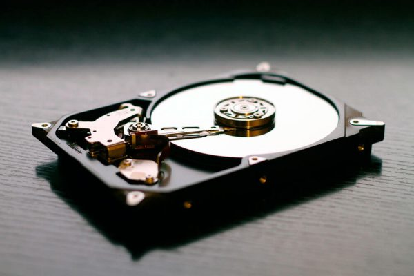

Memoria Ram
La memoria RAM es la memoria principal de un dispositivo, esa donde se almacenan de forma temporal los datos de los programas que estás utilizando en este momento. Sus siglas significan Random Access Memory, lo que traducido al español sería Memoria de Acceso Aleatorio, y es un tipo de memoria que te puedes encontrar en cualquier dispositivo, desde ordenadores de sobremesa hasta teléfonos móviles. La memoria RAM tiene dos características que la diferencian del resto de tipos de almacenamiento. Por una parte tiene una enorme velocidad, y por otra los datos sólo se almacenan de forma temporal. Esto quiere decir que cada vez que reinicies o apagues tu ordenador, lo normal es que los datos que haya almacenados en la RAM se pierdan.
Teniendo en cuenta que la RAM sirve para que el ordenador o dispositivo móvil gestione los datos de las aplicaciones en funcionamiento, la cantidad que tengas afecta directamente al rendimiento de tu dispositivo. Cuanta más RAM tengas más aplicaciones podrás gestionar a la vez, y de ahí su importancia porque si no hay suficiente el ordenador puede ir lento.Perifericos
En informática, periférico es la denominación genérica para designar al aparato o dispositivo auxiliar e independiente conectado a la placa base de una computadora. Se consideran periféricos a las unidades o dispositivos de hardware a través de los cuales el ordenador se comunica con el exterior, y también a los sistemas que almacenan o archivan la información, sirviendo de memoria auxiliar de la memoria principal.
Se considera periférico a los dispositivos que no pertenecen al núcleo fundamental del ordenador, formado por la unidad central de procesamiento (CPU) y la memoria principal, permitan realizar operaciones de entrada/salida (E/S) complementarias al proceso de datos que realiza la CPU. Estas tres unidades básicas en un ordenador son: CPU, memoria central y el subsistema de E/S, están comunicadas entre sí por tres buses o canales de comunicación: Direcciones, para seleccionar la dirección del dato o del periférico al que se quiere acceder. Control, básicamente para seleccionar la operación a realizar sobre el dato (principalmente lectura, escritura o modificación).
Los periféricos pueden clasificarse en las siguientes categorías principales:
Periféricos de entrada: captan y digitalizan los datos de ser necesario, introducidos por el usuario o por otro dispositivo y los envían al ordenador para ser procesados.
Periféricos de salida: son dispositivos que muestran o proyectan información hacia el exterior del ordenador. La mayoría son para informar, alertar, comunicar, proyectar o dar al usuario cierta información, de la misma forma se encargan de convertir los impulsos eléctricos en información legible para el usuario. Sin embargo, no todos de este tipo de periféricos es información para el usuario. Un ejemplo: Impresora.
Periféricos de entrada/salida (E/S): sirven para la comunicación de la computadora con el medio externo.
Disco Duro
En informática, la unidad de disco duro o unidad de disco rígido (en inglés: hard disk drive, HDD) es un dispositivo de almacenamiento de datos que emplea un sistema de grabación magnética para almacenar y recuperar archivos digitales. Se compone de uno o más platos o discos rígidos, recubiertos con material magnético y unidos por un mismo eje que gira a gran velocidad dentro de una caja metálica sellada. Sobre cada plato, y en cada una de sus caras, se sitúa un cabezal de lectura/escritura que flota sobre una delgada lámina de aire generada por la rotación de los discos. Permite el acceso aleatorio a los datos, lo que significa que los bloques de datos se pueden almacenar o recuperar en cualquier orden y no solo de forma secuencial. Las unidades de disco duro son un tipo de memoria no volátil, que retienen los datos almacenados incluso cuando están apagados.
Dentro de la unidad de disco duro hay uno o varios discos (de aluminio o cristal) concéntricos llamados platos (normalmente entre 2 y 4, aunque pueden ser hasta 6 o 7 según el modelo), y que giran todos a la vez sobre el mismo eje, al que están unidos. El cabezal (dispositivo de lectura y escritura) está formado por un conjunto de brazos paralelos a los platos, alineados verticalmente y que también se desplazan de forma simultánea, en cuya punta están las cabezas de lectura/escritura. Por norma general hay una cabeza de lectura/escritura para cada superficie de cada plato. Los cabezales pueden moverse hacia el interior o el exterior de los platos, lo cual combinado con la rotación de los mismos permite que los cabezales puedan alcanzar cualquier posición de la superficie de los platos.
Palabras Sabias
 Hay dos cosas infinitas: el universo y la estupidez humana. De la primera no estoy completamente seguro..
Hay dos cosas infinitas: el universo y la estupidez humana. De la primera no estoy completamente seguro..
Albert Einstein